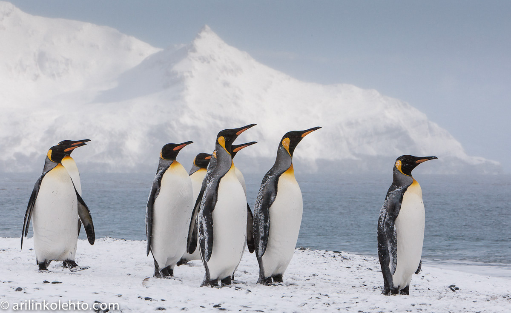
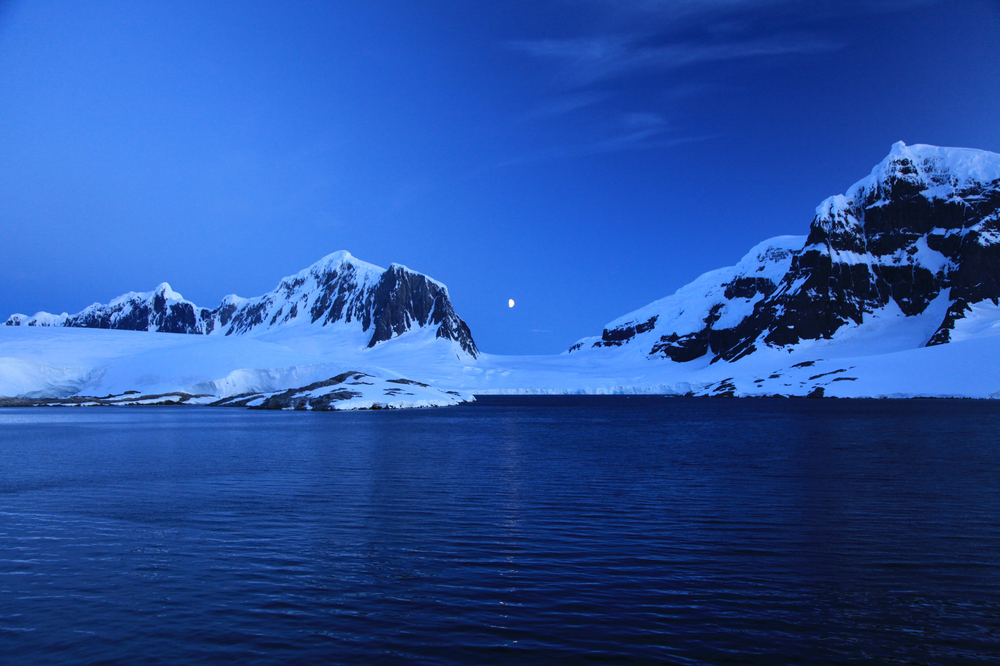
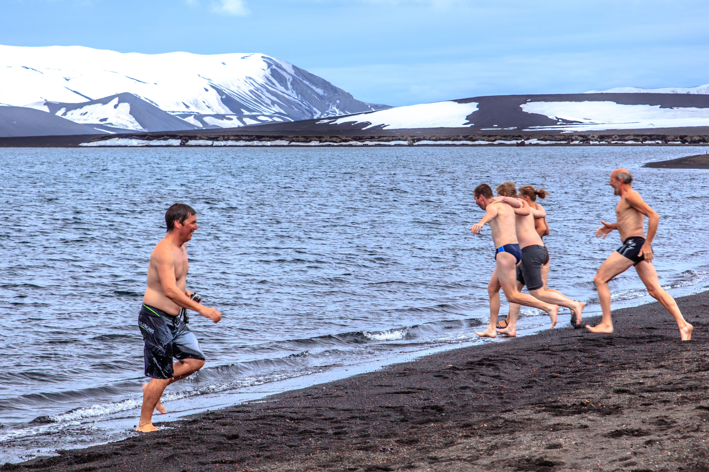
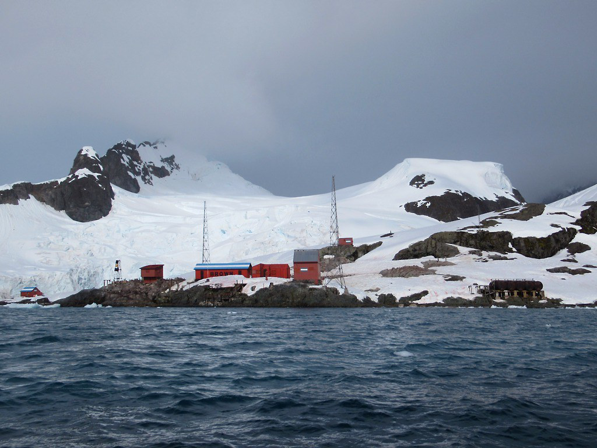

Antarctica
Explore the untouched
Warning! People can only visit Antarctica during summer months. Winter temperatures drop below −80°C (−112°F), making travel nearly impossible.

The South Shetland Islands are located in the Southern Ocean, just south of the Antarctic Peninsula. They offer a pristine environment ideal for wildlife observation and scientific exploration.
🎯 Things to do:
- Wildlife viewing
- Photography
- Cruises
- Exploration
- Scenic viewing
- Learning

Antarctic Peninsula
📍 Location: Antarctic Peninsula
🌤️ Best Months: November – March
A breathtaking icy wilderness filled with glaciers, penguins, and dramatic landscapes. Summer allows access via expedition cruises for unforgettable wildlife encounters.
🎯 Things to do:
- Wildlife spotting
- Cruises
- Iceberg viewing
- Photography
- Exploration
- Kayaking

Deception Island
📍 Location: South Shetland Islands
🌤️ Best Months: November – March
A unique volcanic island with a flooded caldera, offering dramatic landscapes and rare geothermal activity in Antarctica.
🎯 Things to do:
- Wildlife viewing
- Volcano exploration
- Photography
- Cruises
- Hiking

Paradise Bay
📍 Location: Antarctic Peninsula
🌤️ Best Months: November – March
Paradise Bay is one of Antarctica’s most scenic locations, known for calm waters, towering ice cliffs, and incredible reflections—perfect for peaceful exploration.
🎯 Things to do:
- Kayaking
- Wildlife viewing
- Photography
- Cruises
- Sightseeing
- Exploration